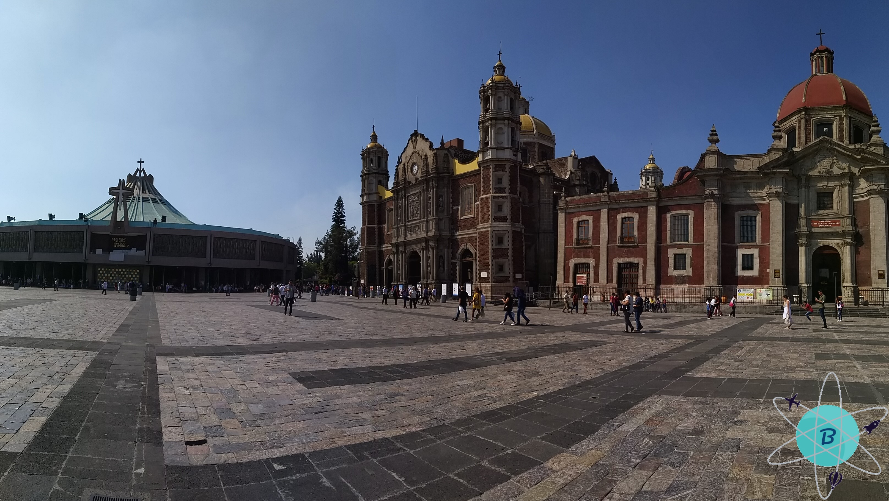
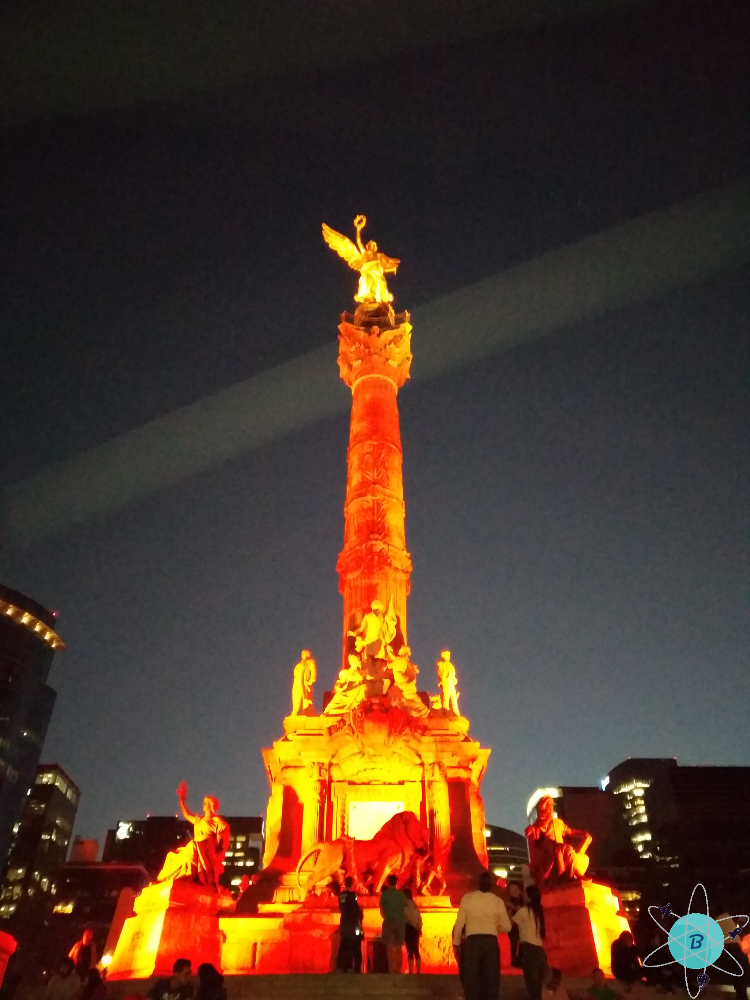

Ciudad de México, un lugar histórico
Fecha del viaje: 22-03-2019
Decidimos viajar a esta bella ciudad de vacaciones porque deseábamos conocer más de cerca su cultura, su majestuosa arquitectura, parques y su historia, otra razón es por su famoso programa “Chavo del 8” ♥. Buscamos en diferentes sitios web los lugares más emblemáticos para conocer en CDMX, y encontramos varias opciones por no decir que infinidad ya que es una de las capitales más grandes del mundo.
El vuelo desde Bogotá a ciudad de México es de aproximadamente 5 horas, al llegar al aeropuerto de Ciudad de Mexico te puedes conectar al wi-fi para pedir el transporte por aplicaciones móviles o afuera hay taxis y/o camionetas tipo vans que te llevan a donde quieras ir. El transporte en la ciudad es muy accesible ya que hay varias opciones a parte de las ya mencionadas, como el metro, metrobús y microbús.
Existen muchos lugares por visitar y unos conectan con otros a medida que vas caminando, inicia tu aventura por el Monumento a la Revolución que está ubicado en la plaza de la república y en el sótano encuentras el Museo Nacional de la Revolución que te ilustra la historia del periodo revolucionario, si deseas entrar al museo debes tener en cuenta los horarios para el acceso ya que varían de acuerdo al día (En la sección de presupuesto, se encuentra el horario) y el precio de la boleta depende del plan que quieras realizar, en la taquilla te explican cada uno de los planes que te ofrecen. Al atravesar la plaza del monumento de la revolución a dos cuadras por la Avenida Juárez llegas a la Alameda central es uno de los parques públicos del centro de la ciudad y más antiguo de América, al estar inmerso en el parque verás esculturas, fuentes, artistas callejeros, árboles morados!! y varios lugares para comer ¡Aquí comerás una de las mejores tortas de jamón!, al recorrer el parque verás uno de los monumentos más simbólicos de este parque es el Hemiciclo a Juárez es un homenaje al expresidente mexicano Benito Juárez; al salir del parque costado oriental se halla el Palacio de Bellas Artes es considerado el más importante en la expresión del arte y la cultura de la ciudad, su arquitectura es impresionante tanto por fuera como por dentro, tiene varios espacios como el Museo Nacional de Arquitectura y el Museo del Palacio de Bellas Artes, en la sala principal se haya el telón de cristal que ilustra las cumbres nevadas del valle de México, en esta sala se realizan funciones de ópera, música sinfónica, contemporánea, danza y recitales, a su vez puedes observar el muralismo plasmado por diferentes artistas en cada una de las paredes del palacio.

Pasando la calle se encuentra la Torre latinoamericana el primer rascacielos de CDMX con 45 pisos en el centro histórico ahí se sube a la cima del edificio; hay museos como el Museo del Bicentenario y Museo La Ciudad y la Torre a través de los siglos, con el boleto del mirador podrás ingresar al segundo museo ya mencionado, si deseas recorrer el otro museo tiene un costo adicional que debes cancelar en taquilla; el mirador cuenta con telescopios para observar la ciudad desde cualquier costado, el estar allí es todo un deleite pues es una ciudad enorme con una arquitectura colonial bellísima para los amantes de la cultura, arte e historia.
Al continuar con el recorrido por la Avenida Francisco verás la arquitectura y los centros comerciales del centro histórico de la ciudad y llegarás a la Plaza de la Constitución que es la plaza principal aunque también es conocida como El zócalo está rodeada por la Catedral Metropolitana de la Ciudad de México, el Palacio Nacional, el antiguo Palacio del Ayuntamiento, la Suprema Corte de Justicia y en la parte central la bandera representativa de la ciudad; no te olvides de ingresar a la Catedral pues es uno de los patrimonios de la humanidad donde veras las esculturas, pinturas y mosaicos que ilustran las enseñanzas de la religión católica; para finalizar este día una visita al Museo de la Ciudad de México en su edificación se ve plasmada la arquitectura barroca del siglo XVIII, en cada una de sus salas se exhiben exposiciones temporales que cambian de acuerdo a la temática que se quiere representar, está abierto para todo público con el fin de realizar actividades culturales que conlleven a narrar la historia de la ciudad de México a través del tiempo, solo hay dos salas permanentes que son la Biblioteca Jaime Torres Bodet y el estudio del pintor Joaquín Clausell.
Al día siguiente el recorrido inicia por el Bosque de Chapultepec es un parque urbano gigantesco que tiene dos secciones, la primera con lagos artificiales, fuentes, espacios deportivos y recreativos, comercio de artesanías y comidas rápidas; al adentrarse al bosque verás el letrero CDMX para que te tomes muchas selfies, en el camino encuentras el Zoológico de Chapultepec que cuenta con aproximadamente 1.200 especies de fauna silvestre de México y de otros países, se divide en 6 áreas que son pradera, costa marítima, desierto, tropical, templado y aviario, en el sitio donde se encuentra el animal hay un letrero con una pequeña reseña, el nivel de extinción y su origen; los animales se ven que están bien cuidados y que en las instalaciones hacen el mantenimiento correspondiente, dentro del zoológico hay lugares para comer y beber, recuerda llevar zapatos cómodos, tenis preferiblemente, bloqueador y gorra pues caminarás mucho ya que es muy grande. Recuerda: No molestar ni alimentar a los animales que habitan el lugar, ¡este lugar es gratuito!.
Dentro del parque en una pequeña montaña se encuentra el Castillo de Chapultepec que funciona como Museo Nacional de Historia que abarca la historia prehispánica y virreinal hasta inicios del siglo XX, en cada rincón del castillo muestran el estilo de la realeza española y exhibiciones de los artículos de la época; encontrarás el carruaje de gala del emperador Maximiliano y su esposa Carlota, podrás hacer un “house tour” donde verás las habitaciones, el antecomedor, el comedor, la antesala, la sala, jardines con fuentes y esculturas; uno de los jardines tiene la estatua de un Chapulín y da una vista hacia el bosque y parte de la ciudad ¡La vista que brinda es maravillosa!, hay varias salas que representan la arqueología de culturas como la de los mayas o los mexicas (conocidos también como aztecas), vitrales que ilustran las figuras de diosas mitológicas, murales que cuentan la historia del castillo y de México.
La última parada de este recorrido es el Museo Soumaya ubicado en Nuevo Polanco, tiene un diseño vanguardista con una fachada asimétrica y tiene seis plantas conectadas por una rampa en forma de espiral o por ascensor se puede recorrer el museo, en cada planta o sala hay exposiciones de diferentes artistas, en la planta superior la luz es natural ya que el techo es semitransparente. No vayas con afanes es un lugar para disfrutar del arte que te brindan los artistas que expresan sus ideas, emociones y creatividad en cada escultura y pintura.
Si estas en Mexico tienes que ir a las Pirámides Teotihuacán, para ir toca dirigirnos a la terminal de transporte del norte y subirnos a un bus que cuesta aproximadamente 60 pesos mxn, el trayecto es de más o menos una hora, si deseas, considera comprar un tour guiado para conocer la historia y el significado de cada una de las pirámides, y sobre la piedra obsidiana que es un vidrio volcánico que se forma cuando se enfría la lava, con esta piedra lo habitantes de esta zona realizan artesanías que puedes comprar en los almacenes afuera y dentro de las pirámides, hay guías en las dos entradas que existen; al ingreso a Teotihuacán están las taquillas para la compra de los boletos. Al ingresar tienes que seguir el camino de la calzada de los muertos que conecta con las ruinas de los templos y lugares donde habitaban los mexicas, te encontrarás con las más conocidas pirámides conocidas por los habitantes y los turistas que son la Pirámide del sol que tiene una altura de 63 metros para poder subirla debes llegar super temprano ya que a medida que transcurre el día se hace un fila que rodea toda la pirámide, la otra es la Pirámide de la luna que brinda una panorámica de Teotihuacán; al bajar de las pirámides y continuar con la ruta se ve toda la ciudad en ruinas de los que en su época serían las casas, templos, palacios. Recomendaciones llegar temprano para subir a las pirámides ya que se llena rápidamente de turistas, ropa y calzado cómodo, bloqueador, sombrero y una actitud positiva.
Los buses para devolverte a la ciudad pasan cada 15 minutos aproximadamente y te puedes bajar en una estación cerca de la Basílica de Guadalupe que es un santuario de la iglesia católica, dedicado a la Virgen María; este lugar es conocido como Conjunto religioso del Tepeyac y está conformado por varias iglesias y edificaciones: Capilla de Indios, Capillas del Cerrito, Cementerio del Tepeyac, Capilla del Pocito, Templo y antiguo convento de las Capuchinas, Instalaciones para investigación, Museo de la Basílica de Guadalupe, Templo expiatorio a Cristo Rey que es la antigua Basílica de Guadalupe y la Nueva Basílica de Guadalupe; en este conjunto religioso está la estatua en honor a Juan pablo II. Alrededor de este conjunto hay varios locales comerciales para comprar recuerdos y artículos religiosos y el sacerdote al finalizar la eucaristía los bendice.
Una parada imperdible si visitas la ciudad de México es el Estadio Azteca con una capacidad de 87.000 espectadores siendo uno de los estadios más grandes del mundo, el tour incluye guía y visita a los vestidores, sala de prensa, túnel maratón, placas conmemorativas y a la cancha, te cuenta cómo se realizó la construcción del estadio, los primeros partidos que se realizaron y muchos más datos, no les quiero dañar la experiencia contándoles los detalles, mejor anímate, ve y disfrútala tú mismo.
Sin duda visita el Museo de Cera ubicado en la colonia Juárez, cuenta con 230 figuras de cera distribuidas por temáticas en diferentes salas, hay esculturas de todo tipo político, religioso, tecnológico, deportivo, artistas, científicos, infantiles, terror, superhéroes, entre otros, tanto de México como del mundo; te podrás tomar todas las fotos que quieras con cada una de las esculturas sin tocarlas y con precaución de no acercarte mucho; también se encuentra el Museo de Ripley de este no les podemos platicar pues no ingresamos pero al salir del museo de cera en el vestíbulo hay objetos que muestran la temática de este museo, como una llanta y una silla gigantesca.
Al salir del museo a dos cuadras está la Avenida del Paseo de la Reforma que es la más emblemática de la ciudad de México, uno de los monumentos más conocidos y nombrados es el Ángel de la independencia tiene una altura de 45 metros y la figura en la parte superior representa la victoria alada (En la mitología griega es la diosa que representa el triunfo) con sus alas extendidas, en la mano derecha sujeta una corona de laurel representando la victoria de los héroes patrios y en su mano izquierda una cadena rota que simboliza la liberación de los tres siglos del virreinato de España. En la noche es alumbrado con luces, es una vista radiante que no puedes desaprovechar.
TIPYAGERS
- En la segunda sección del Bosque de Chapultepec podrás visitar el jardín botánico, museo de historia natural, museo Tamayo, museo de arte moderno, museo del caracol, museo nacional de antropología, museo del niño y museo del sitio.
- En las Pirámides Teotihuacán si te gusta las alturas, puedes realizar el tour desde el cielo en globo aerostático.
- En México popote hace referencia a lo que nosotros los colombianos conocemos como pitillo.
- Cuando en CDMX uno de sus habitantes te diga “¿mande?” significa que le repitas lo que le acabas de decir, es como el “¿qué?, ¿cómo?, me repites” de otros países latinoamericanos.
- Si te gusta el picante (aunque en mi opinión no pican) debes probar los paquetes de “Takis”.
- Algo muy curioso que nos pasó en México y diferente a algunos paises de latinoamerica, es que cuando compras algo el vendedor te da las gracias y no al contrario como estamos acostumbrados en Colombia.
El presupuesto:
Duración: 4 días y 3 noches Precio final del viaje: 935 Dólares. (Los valores que se muestran son valores aproximados de nuestro viaje).